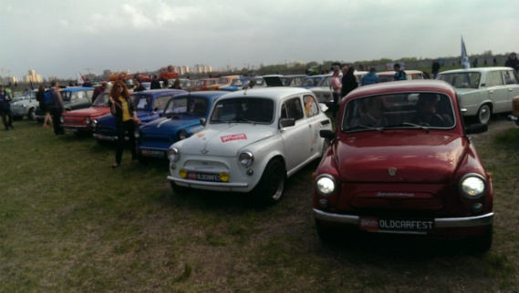
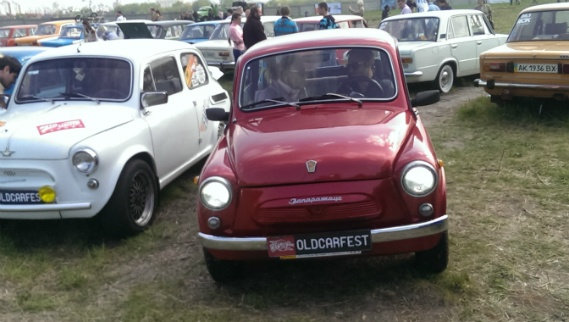

Компанія «АвтоЗАЗ-сервіс» - дистриб’ютор автомобілів ЗАЗ в Україні – 24-26 квітня взяла участь у фестивалі ретро техніки Old Car Fest, який пройшов під крилами історичної авіатехніки на території Державного музею авіації за адресою вулиця Медова 1.
Під час проведення фестивалю відбувся показ ретро автомобілів, мотоциклів, моторолерів, вантажівок, автобусів та іншої техніки вітчизняного та зарубіжного виробництва.
На окремій експозиції, котра присвячена еволюції автомобіля, було показано розвиток візуальної та конструкторської думки на прикладі вітчизняного автопрому, а саме – бренду ЗАЗ.

Історія ЗАЗ починається ще з 19-го століття, а саме з 1863 року. Первісток вітчизняного комбайнобудування, потім став першим у країні підприємством, яке освоїло виробництво автомобілів малого класу. Завод зростав, будувався, піднімався з руїн, реконструювався, перепрофілювався, та продовжував йти вперед, слідуючи основного курсу, спрямованого на створення якісного вітчизняного автомобіля. Тобто історія вже продовжується більше ніж 150 років.
На фестивалі ретро автомобілів Old Car Fest були представлені як найстарші представники бренду, такі моделі як ЗАЗ 965, ЗАЗ 966, ЗАЗ 968М, Таврія-1102 та ін., так і моделі сучасного виробництва: Sens, Lanos, Vida, Forza та Lanos Pick-up. Відвідувачи виставки мали змогу ознайомитись з автомобілями, а консультанти допомогали визначитися з технічними характеристиками та цінами, адже зараз на автомобілі ЗАЗ діють унікальні цінові пропозиції.
З 21 квітня 2015 на весь модельний ряд ЗАЗ ціни знижені на 15%, що дозволяє українським автомобілістам зробити вигідні покупки з максимальною знижкою 41 910 * грн. Завдяки новим цінам автомобілі ZAZ є стають найдоступнішими на автомобільному ринку в найпопулярнішому сегменті нових легкових автомобілів в Україні!

Варто відзначити, що з урахуванням знижки вартість автомобілів усього модельного ряду ЗАЗ стала максимально приваблива.
Проявляючи турботу про споживача, компанія «АвтоЗАЗ-сервіс» в черговий раз закріплює за собою статус компанії, що надає надійні та доступні автомобілі від національного виробника для українського автовласника.
Нагадаємо, що в 2014 році всі авто модельного ряду ЗАЗ сертифіковані згідно екологічному стандарту Євро-4.
На автомобілі ЗАЗ поширюється сервісна гарантія в 3 роки, або 100 тис. км. пробігу. При цьому міжсервісний інтервал складає 15 тис. км., що відповідає європейським стандартам гарантійної політики обслуговування автомобілів.
* Наведено знижка на автомобіль ЗАЗ VIDA SA6970-22 2014 в .. Співвідношення розміру знижки до попередньої ціни реалізації автомобіля ЗАЗ VIDA SA6970-22 становить 15% станом на 22.04.2015г. Знижка діє в дилерській мережі філії "АвтоЗАЗ-сервіс". Кількість автомобілів обмежена. Продавець має право змінювати комплектацію та ціну автомобіля без попереднього повідомлення покупця. Про хід акції та її продовження уточнюйте на сайті www. zaz.ua